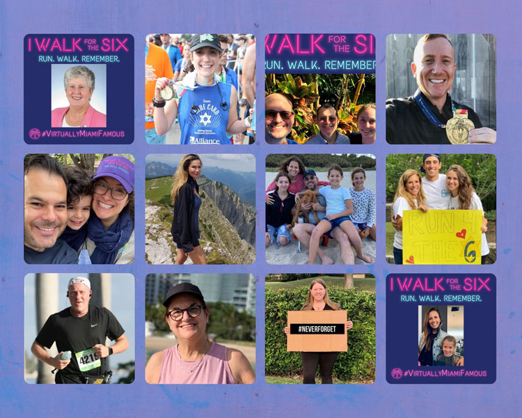

Blog Summary
This past weekend was to be the 19th Miami Marathon. Big kudos to race director Frankie Ruiz and the entire organizing team for transforming this race into a fantastic virtual event for our city! This was our 12th consecutive year running as the JCS Alliance Team Blue Card in support of local Holocaust Survivors.
This past weekend was to be the 19th Miami Marathon. Big kudos to race director Frankie Ruiz and the entire organizing team for transforming this race into a fantastic virtual event for our city!
This was our 12th consecutive year running as the JCS Alliance Team Blue Card in support of local Holocaust Survivors. Although running/walking virtually may have felt different to many, our team’s energy, passion, and respect for our survivors is stronger than ever.
Miami Marathon 2022, here we come!
